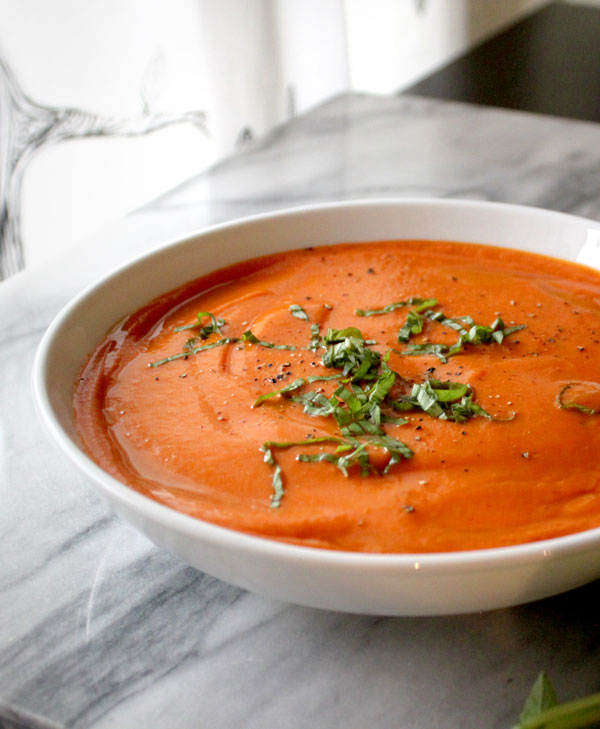

Roasted Red Pepper Soup

Description
This soup is perfect for chilly, fall nights. Make yourself a grilled cheese to go with it and take full advantage of the creaminess and cheesiness this soup offers in addition to the depth from the roasted red peppers and sundried tomatoes!
Prep time:20 minutes. Cook time:30 minutes. Total time:50 minutes.
Ingredients
- 4 tbsps salted butter
- 1 diced onion
- 1/2 diced carrots
- 1.5 tbsps minced garlic
- 3 sprigs fresh thyme
- 1/3 cup roasted red pepper
- 2 tbsps sundried tomatoes
- 2.5 tbsp tomato paste
- 2 cans fire roasted tomatoes
- 2.5 cups vegetable broth
- 1/4 packed cup of fresh basil
- 1 cup heavy cream
- 1/8 cup romano cheese
Spices Needed
- 1/2 tsp onion powder
- 1/2 tsp garlic powder
- 1/4 tsp cayenne pepper
- 1/4 tsp black pepper
- 3/4 tsp paprika
- 1 tsp oregano
- 1.5 tsp sugar
- salt to taste
Steps
- Heat a large saucepan over medium high heat and add the butter. When it's melted, add the onion and carrots and saute until soft.
- Add the garlic and thyme and stir contiously for roughly 30 seconds.
- Add the roasted red peppers, sundried tomatoes, tomato paste, fire roasted tomatoes, and veggie broth, and stir to combine.
- Add all of the spices and simmer for 15 minutes.
- Add the basil and stir to combine.
- Transfer contents of saucepan to a blender and blend until smooth.Return to saucepan.
- Add the heavy cream, stir to combine.
- Add the romano cheese, stir to combine, and serve immediately.